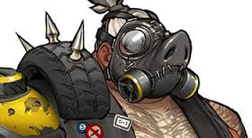
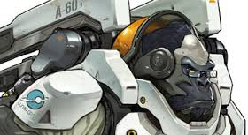
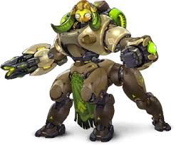

Reinhardt a german crusader and has a full body suit of armor. Reinhardt has 300 health with 200 armor, he weilds a hammer and has 3 abilities: Fire Strike, Charge, and Barrier Field. Reinhardt's fire strike does 100 damage per enemy that walks or gets hit with fire strike. Fire strike has a cooldown of 6 seconds and fire strike goes through shields. Reinhardts charge ability does 50 damage with bumping poeple, but when someone is pinned it does 300 damage. It has a cooldown of 10 seconds and the maximum range is 55 meters. Reinhardts barrier field is a shield that has 2000 health and regens 195 hp when the shield is not active. Although when the shield loses all of health it takes 5 seconds for the shield to become available again. The shield starts to regen after 2 seconds of it not being active. Reinhardts ultimate ability is called earthshatter and is an area of effect ability. This ability stuns everyone that is in a 20 meters radius for 2.5 seconds and does 50 damage to everyone that is hit. Renihardts rocket hammer does 75 damage per swing and has a 5 meter range that cannot get headshots.
Roadhog is a pig on a mission with junkrat to cause terror. Roadhog has two abilities and 600 health that wields a scrap gun. These two abilities consist of his hook, and take a breather. Roadhogs hook does 30 damage and can be thrown 20 meters. This ability has a 8 second cooldown and the hero has to be in Roadhogs line of sight to be hooked. Roadhog's take a breather ability lets him heal himself 300 health but cannot move when using this ability. This ability has a cooldown of 8 seconds and lasts 1 second. Roadhogs ultimate ability is called whole hog; this ability lets him use his shotgun like a machine gun. This ability lasts 6 seconds and does a maximum of 5000 damage. Roadhog's scrap gun does 2-9 damage per pellet and has 25 pellets. This gun has 4 ammo, but has an alt fire which is more long range. This alt fire does 50 damage and does 2-9 damage per pellet. Still has 25 pellets and has a range of 9 meters.
Winston is a monkey that loves to eat peanut butter. Winston has 400 health and 100 armor, wields a tesla cannon and has 2 abilities. These abilities are: jump pack, and barrier projector. The jump pack ability does 50 damage when landing on or next to someone. The range on the landing damage is 5 meters and can launch the maximum 18-20 meters. This ability has a cooldown of 6 seconds and cannot headshot upon landing. Winston's barrier projector is a bubble shield that has 600 health lasts 5 seconds and has a cooldown of 13 seconds. Winston's ultimate ability is called primal rage and this ability lasts for 10 seconds. This ability lets him do 40 damage with his arms, he gains 500 health, and the jump pack ability has a 2 seconds cooldown when in this ability. Winston's tesla cannon is an multitarget weapon that does 60 damage per second. This weapon has a range of 8 meters and this weapon has 100 ammo and uses 20 ammo per second. This weapon cannot get headshots and the area of effect has a range of 6 meters.
Orisa is a robot rebuilt by a little girl and protects numbani. Orisa has 200 health and 200 armor, has an arm cannon, and has 3 abilities. These abilities are: halt, fortify, and protective barrier. The halt ability pulls heros to the ball that is launched. This ability has an option to stop it midair or it stops when it has hit something. This ability has an cooldown of 8 seconds and the maximum range that it can pull is 7.5 meter radius. Orisa's fortify ability lets her take 50% less damage and has a cooldown of 10 seconds and lasts 4 seconds. Orisa's protective barrier ability is an arced shield that has 900 health. This ability has a cooldown of 12 seconds and has a duration of 20 seconds. Orisa's ultimate ability is called supercharger and has 200 health. Supercharger give 50% more damage to anyone that is in a 25 meter radius. This ability is placed on the ground and has a duration of 15 seconds. Orisa's fusion driver or arm cannon does 12 damage and has 150 ammo. This weapon shoots 12 bullets per second is rapid fire.